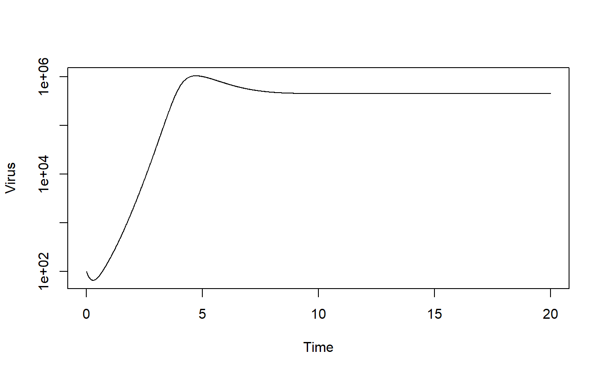

This function runs a simulation of the basic 3 compartment virus infection model including the pharmacokinetics and pharmacodynamics of a drug. The user provides initial conditions and parameter values for the system. The function simulates the ODE using an ODE solver from the deSolve package.
simulate_pkpdmodel_ode(
U = 1e+05,
I = 0,
V = 10,
n = 0,
dU = 0,
dI = 1,
dV = 2,
b = 1e-05,
g = 1,
p = 10,
C0 = 1,
dC = 1,
C50 = 1,
k = 1,
Emax = 0,
txstart = 10,
txinterval = 1,
tstart = 0,
tfinal = 20,
dt = 0.01
): initial number of uninfected target cells : numeric
: initial number of infected target cells : numeric
: initial number of infectious virions : numeric
: rate of new uninfected cell replenishment : numeric
: rate at which uninfected cells die : numeric
: rate at which infected cells die : numeric
: rate at which infectious virus is cleared : numeric
: rate at which virus infects cells : numeric
: unit conversion factor : numeric
: rate at which infected cells produce virus : numeric
: drug dose given at specified times : numeric
: drug concentration decay rate : numeric
: drug concentration at which effect is half maximum : numeric
: steepness of concentration-dependent drug effect : numeric
: maximum drug efficacy (0-1) : numeric
: time of drug treatment start : numeric
: time between drug doses : numeric
: Start time of simulation : numeric
: Final time of simulation : numeric
: Times for which result is returned : numeric
A list. The list has only one element called ts. ts contains the time-series of the simulation. The 1st column of ts is Time, the other columns are the model variables.
A basic virus infection model with drug PkPd
A simple compartmental model is simulated as a set of ordinary differential equations, using an ode solver from the deSolve package. This code is part of the DSAIRM R package. For additional model details, see the corresponding app in the DSAIRM package.
This function does not perform any error checking. So if you try to do something nonsensical (e.g. specify negative parameter or starting values), the code will likely abort with an error message.
See the Shiny app documentation corresponding to this simulator function for more details on this model. See the manual for the deSolve package for details on the underlying ODE simulator algorithm.
# To run the simulation with default parameters just call the function:
result <- simulate_pkpdmodel_ode()
# To choose parameter values other than the standard one, specify them, like such:
result <- simulate_pkpdmodel_ode(V = 100, txstart = 10, n = 1e5, dU = 1e-2)
# You should then use the simulation result returned from the function, like this:
plot(result$ts[,"time"],result$ts[,"V"],xlab='Time',ylab='Virus',type='l',log='y')
